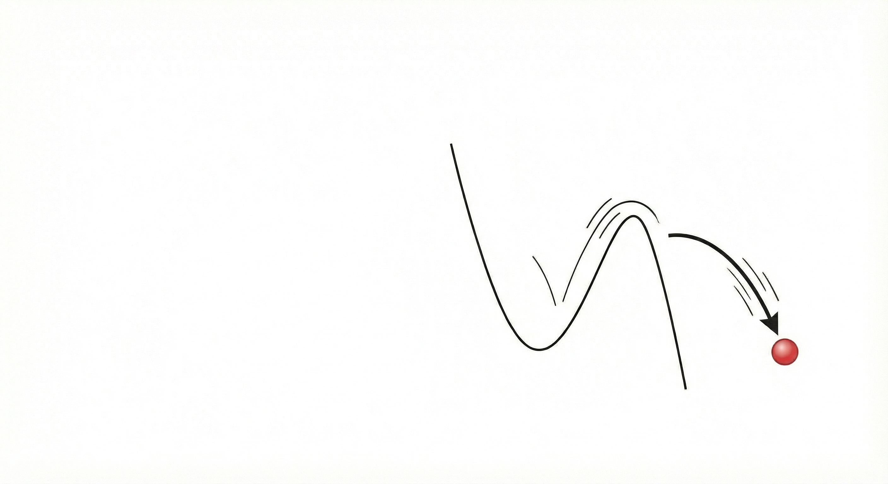
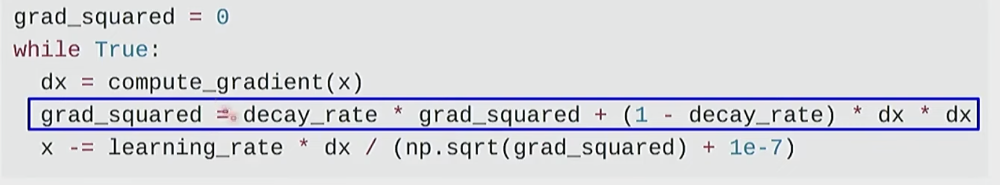

0x00. 损失函数与重力场的关系
在大学物理中，我们研究一个物体在重力势能场 $U(x)$ 中的运动。物体倾向于向势能最低点运动。 在人工智能中，在获得损失函数 $J(\theta)$ 的过程，便可以类比为这样的过程，而我们的参数 $\theta$ 就是那个试图滚向山谷最低点（最优解）的小球。
最基础的随机梯度下降 (SGD)算法 在进行梯度下降时，这个小球好像没有质量一样，每一步只受当前的“坡度”（梯度）影响： $$ \theta_{t+1} = \theta_t - \eta \nabla J(\theta_t) $$ 这导致它遇到一个局部平坦区域会停滞，遇到狭窄山谷会疯狂震荡。 这样也就导致模型没办法很好地收敛，甚至在没有下降到山底就会停止下降。

0x01. 动量：引入“惯性”
最普通的梯度下降（SGD，随机梯度下降）最大的问题是它不存储之前的梯度信息。在物理学中，运动的物体拥有动量，即 $p = mv$。动量使物体有惯性，使其倾向于保持原本的运动方向。
🏛️ 大学物理视角
根据牛顿第二定律，物体受力改变速度，而不是直接改变位置：
$$ F = ma \Rightarrow F = m \frac{dv}{dt} $$物体的当前速度不仅仅取决于当前的力（重力），还取决于之前的速度。当我们向前运动时，受到一个和运动方向相反的力，我们会沿原来方向运动一段距离之后慢慢停下。
🤖 AI 优化器视角
Momentum 优化器引入了速度变量 $v_t$。参数更新不再直接使用梯度，而是更新速度：
$$ v_t = \gamma v_{t-1} + \eta \nabla J(\theta_t) $$ $$ \theta_{t+1} = \theta_t - v_t $$其中 $\gamma$ (通常为0.9) 类似于空气阻力系数的补数。它累积了过去的梯度信息。
如果写成代码大概就like this

0x02. RMSProp：引入“摩擦/能量耗散”
Momentum优化器解决了速度问题，小球能够冲出局部最低点，但如果坡度极陡，小球会获得过大的动能，导致在谷底运动速度过快甚至飞出跑道。我们需要一种机制来适应地形的“粗糙程度”。
🏛️ 大学物理视角
想象小球在不同介质中运动。在光滑冰面（梯度一致方向）上，阻力小；在泥潭（梯度震荡剧烈）中，阻力大。
这类似于能量耗散或摩擦力。当环境变化剧烈（梯度幅值很大）时，我们需要增大增加下垫面的粗糙程度，强行减速以保持稳定。
也可以类似于骑自行车下坡，在下坡陡的地方需要捏闸避免车速太快，在平地需要蹬车发力（抵消摩擦力）让车骑快一点
🤖 AI 优化器视角
RMSProp 关注梯度的平方消除梯度正负的影响：
$$ Eg^2_t = 0.9 Eg^2_{t-1} + 0.1 g_t^2 $$ $$ \theta_{t+1} = \theta_t - \frac{\eta}{\sqrt{Eg^2_t + \epsilon}} g_t $$分母中的 $\sqrt{Eg^2_t}$ 起到了归一化作用：坡度越陡（$g_t^2$越大），分母越大，更新步长反而变小。
如果写成代码，大概就like this：
0x03. Adam：上面两种优化器的结合
Adam (Adaptive Moment Estimation) 是目前最流行的优化器。它的名字来源于“矩估计”，但从物理的视角上来看，它是 Momentum 和 RMSProp 的一个集合。
物理的融合
- 一阶矩 (First Moment) $m_t$： 对应动量/速度。告诉我们该往哪个方向冲（利用惯性）。
- 二阶矩 (Second Moment) $v_t$： 对应未中心化的方差/能量。告诉我们这里的地形有多陡峭、多复杂（利用自适应阻尼）。
Adam 的核心公式
1. 计算动量 (Momentum)： $ m_t = \beta_1 m_{t-1} + (1-\beta_1) g_t $
2. 计算波动 (RMSProp)： $ v_t = \beta_2 v_{t-1} + (1-\beta_2) g_t^2 $
3. 偏差修正 (Bias Correction)： $\hat{m}_t = \frac{m_t}{1-\beta_1^t}, \hat{v}_t = \frac{v_t}{1-\beta_2^t}$ (增加时间参数，解决初始时刻为0的问题)
4. 参数更新： $$ \theta_{t+1} = \theta_t - \frac{\eta}{\sqrt{\hat{v}_t} + \epsilon} \hat{m}_t $$
总结： Adam 就像一个极其智能的物理小球。它既有惯性（Momentum）让它快速穿过平缓区域，又有自适应摩擦系统（RMSProp），在遇到陡峭悬崖或剧烈震荡时自动刹车，稳步下降。